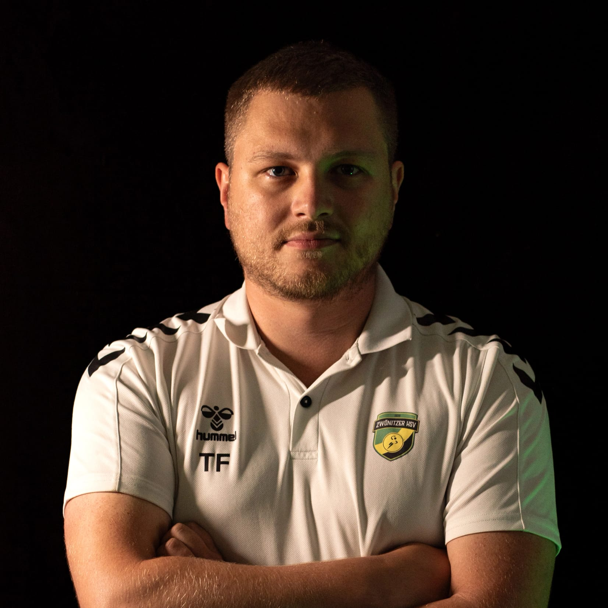

Junior Developer
Tommy Falk
Willkommen auf meinem Portfolio!
Ich bin Tommy, ein leidenschaftlicher Junior Developer.
Auswahl
Projekte
Tech Stack
Womit ich arbeite

Lebenslauf
Vom CNC-Mechaniker zum Web-Developer
Im Januar 2015 schloss ich meine erste Ausbildung zum Zerspanungsmechaniker Fachrichtung Fräsen ab. Nach 3 Jahren Berufserfahrung in diesem Bereich entschied ich mich, eine neue Herausforderung zu suchen und ging im September 2018 zur Bundeswehr, wo ich als IT-Soldat tätig war. Dort erhielt ich erste Einblicke in die Netzwerktechnik und entwickelte ein stetig wachsendes Interesse an der IT-Branche. Da ich schon vorher sehr am Programmieren interessiert war, entschied ich mich nach meiner Bundeswehrzeit, eine zweite Ausbildung zum Fachinformatiker für Anwendungsentwicklung zu beginnen. Diese schloss ich nach zweieinhalb Jahren im Februar 2026 erfolgreich ab.
Kontakt
Nehmen wir Kontakt auf
Schreib mir gerne direkt per E-Mail. Ich freue mich über Austausch, Projektideen oder passende Einstiegsmöglichkeiten.
tofa93@outlook.de